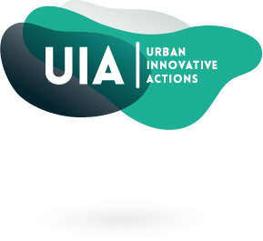
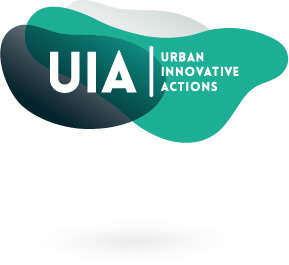
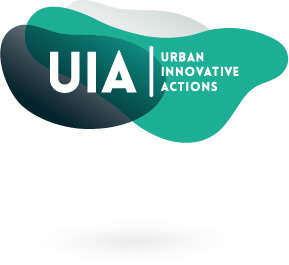

Samarbetspartners:

 



Det första projektet som vi tog oss an var att sätta upp denna web-sida för projektet och för att kunna testa vår chatbot som vi har gjort med hjälp av Dialogflow. Detta är ett bra projekt att börja med då det är rellativt enkelt och lätt att komma igång med, samt att det är lätt att jobba med olika delar samtidigt.
Chatbotten är ett uppdrag som vi har fått i från Kontaktcenter på Växjökommun. Den kommer att finnas på denna sidan och kan svar på frågor gällande det digitala labbet. Vi har även kollat en del på IoT sensorer som kör prottokollet LoRa och finns redan i dag runt om växjö stad.
